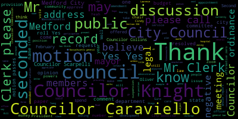
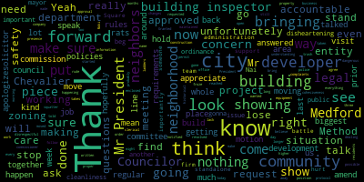
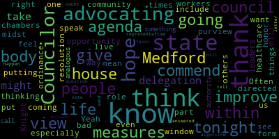
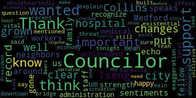

[Bears]: Seventh regular meeting Medford City Council, February 15th, 2022 is now called to order. Mr. Clerk, please call the roll.
[Hurtubise]: Councilor Caraviello. Present. Councilor Collins. Present. Councilor Knight. Present. Councilor Scarpelli. Present. Councilor Tseng. Present. President Morell.
[SPEAKER_06]: Present.
[Hurtubise]: Vice President Bears.
[Bears]: Present. Seven present, none absent. Please rise to salute the flag. Hearings 22-037, City of Medford Notice of Public Hearing. The Medford City Council will hold a continued public hearing in the Howard F. Alden Chambers at Medford City Hall, 85 George P. Hassett Drive, Medford. and via Zoom on Tuesday, February 15th, 2022 at 7 p.m. on a petition from Orba Linabazi of OB's Auto Service to operate an automotive repair and auto body shop class four license at 38 Harvard Avenue, Medford MA 02155 in a C1 zoning district. A Zoom link for this meeting will be posted no later than February 4th, 2022. Petition and plan may be seen in the office of the city clerk, Medford City Hall, Medford, Massachusetts 02155. Chair of licensing, Councilor Scarpelli.
[Scarpelli]: Thank you, Mr. President. I see that the information that we requested over the last two weeks was answered by our building department, Mr. Moki. We find everything in order, I move approval.
[Bears]: Second. Motion of Councilor Scarpelli to move approval, seconded by Councilor Knight. Any further discussion? Mr. Clerk, please call the roll.
[Hurtubise]: Councilor Caraviello? Councilor Collins?
[NqJnNNyD4Uw_SPEAKER_06]: Yes.
[Hurtubise]: Yes. Yes. Yes. Yes. Yes. Yes. Yes.
[Bears]: Yes. Motions, orders, and resolutions 22-074 offered by Councilor Knight, whereas the provisions of Massachusetts General Law Chapter 44, Section 33A reads, Section 33A, salary provisions in budget requirements and limitations, Section 33A, the annual budget shall include some sufficient to pay the salaries of officers and employees fixed by law or by ordinance, notwithstanding any contrary provision of any city charter, No ordinance providing for any increase and increase in salaries or wages of municipal officers or employees shall be enacted except by a two thirds vote of the city council, nor unless it is to be operative for more than three months during the calendar year which is passed, no new position shall be created or increase in rates made by ordinance vote or appointment during the financial year subsequent to the submission of the annual budget. Unless provision therefore has been made by means of a supplemental appropriation, no ordinance vote or appointment creating a new position in any year in which a municipal election is held shall be valid and effective unless said ordinance vote or appointment is operative for more than three months during said municipal election. being so resolved that the City Solicitor render an opinion as to whether the City of Medford is in compliance with the aforementioned provisions of law in regards to the positions outlined in Council Papers 22-023 and 21-631. If you can indulge me for one moment, Councilor Knight, those items were tabled at last week's meeting pending an opinion of the City Solicitor. I do not believe this Council has received the opinion of the City Solicitor, so those items are still on the table, are still tabled. Councilor Knight.
[Knight]: Mr. President, thank you very much. Last week, this item came up and I did a fairly poor job at explaining it. We discussed ordinances and how ordinances are passed in this community. An ordinance requires four votes to be passed in this community unless it's statutorily required otherwise. and the confusion was raised last week based upon the fact that I feel as though we need an opinion as to whether or not this section of the general laws applies when it comes to creating positions via ordinance and giving pay raises via ordinance and whether or not a two-thirds vote is required or a simple majority. I've had preliminary discussions with the city solicitor, who's indicated that she's 90% sure that it would be requiring a two thirds vote to pass these provisions that are before us. Before we go further and get the solicitor's opinion. I do want to say that last week, things got a little out of hand a little crazy in terms of parliamentary procedure and the like and it was not my intention to create any type of confusion, but rather to get clarification. And I know I have speaking with the chair that, you know, it could have been perceived that I was trying to take a shot at the chair and that wasn't my intention at all. My intention was to move forward on the paper and move forward appropriately. As I've said in the past we've all taken an oath. We've taken an oath to uphold the Constitution of the United States, the Constitution of the Commonwealth of Massachusetts, and the ordinances of this community. And I feel as though that's a paramount responsibility for every one of us behind this rail. And when an issue like this comes up, when it comes to financial malfeasance or financial compliance, I feel as though it deserves strict scrutiny. That's why I raised the issue this evening. That's why I asked for the solicitor's opinion. And that's why I've become so passionate about these issues. There's a taxpayer dollars that we're discussing here. And we're discussing taxpayer dollars. of the utmost importance that we're complying with laws. So with that being said, through the chair, it was not my intention to create confusion or to implement any delay tactics. What it was, was to create clarification to be sure that as we move forward, we do the right thing, we comply with the law, we get an opinion from the city solicitor. So for the rest of the term, we don't need to think about this stuff anymore. So that's where this comes from, Mr. President. I again, ask the solicitor for an opinion as to whether or not these papers before us would require the two thirds of the simple majority and she's informed me that she'll be able to give us an opinion later on in the week. So I'd ask my council colleagues to approve this measure so it can officially be sent to her office for an official opinion back to the council, as opposed to an opinion to an individual Councilor who gave her the heads up because it was something I put on the agenda.
[Bears]: Second. Thank you, Councilor Knight. Any further discussion? If I may, from the chair, just Councilor Knight, if you'd be willing to also make sure that I know that you're asking for the opinion, are you asking me relative to the full section or just the two thirds vote.
[Knight]: Well, the paper speaks for itself, the clarification piece was whether or not the two thirds vote will comply, I mean ultimately. The question is, is the city of medford in compliance with the aforementioned provisions if we don't vote on it, then. didn't do anything so yeah we're in compliance right it's whether or not when we when we take the boat in the action now we need compliance right so i think that the question is um you know where the paper is put forward in a fashion that will comply with the financial requirements that are outlined in this in this question um and whether or not um we need four or five votes to pass the provisions that are before us
[Bears]: Thank you. Yes. And the reason I asked is just that this, uh, this third clause here, uh, no ordinance voter appointment, creating a new position in any year in which a municipal election is held. Uh, some of these papers were filed in a, in a election year. So, um, in addition to the two thirds of what I just want clarification on, on the election year provision as well. And from the chair, thank you for your clarification about proceedings last week. It's much appreciated. Yeah. Nothing personal at all on the motion of Councilor Knight, seconded by Councilor Scarpelli. Any further discussion? Seeing none, Mr. Clerk, please call the roll. Councilor Caraviello? Yes.
[Hurtubise]: Councilor Collins? Yes. Councilor Knight?
[Bears]: Yes.
[Hurtubise]: Councilor Scarpelli?
[Bears]: Yes.
[Hurtubise]: Councilor Shang?
[Bears]: Yes.
[Hurtubise]: President Morell? Yes. Vice President Harris?
[Bears]: Yes. I have the affirmative, none in the negative. Motion passes. 22-075 offered by Councilor Scarpelli, be it resolved that the City Council look into concerns dealing with delays with the structure being built at the corner of Lawrence Road and Forest Street, and if the interests of public safety and simple community standards are being followed. Be it further resolved that a representative of the building department and the developer slash owner slash applicant for this permit present themselves before the city council committee of the whole to provide an update and to address the ongoing concerns of trash, dumpsters, debris, unkept property, and other matters. We have further resolved that the Medford Police Department notify the council if the department is aware of possible squatters living at that location. Councilor Scarpelli.
[Scarpelli]: Thank you, Mr. President. I appreciate residents that have reached out to me that had some concerns and wanted me to put this have gone by that property probably every day over the last three months. I've talked to the building commissioner this morning and the squatter situation has been taken care of. They make sure that they have regular police presence to make sure that doesn't happen again. That was happening, but now has been resolved. The project, as you can see, has now started back up prior to this being written. So they're now back to work. I believe what I was told was the historical commission froze the permit because of some clerical or some changes that were made that weren't approved by their office that has since been approved and they've moved forward with that. But I think the biggest piece that we see as much as we don't, we might not agree or like the the look of the building where it's higher and it's longer and it really takes away the look of the neighborhood for what was there prior. There's nothing we can do with the zoning that was in place that was approved. But what we can do is find a way to hold developers accountable for what's being done in our neighborhoods. Granted, they have the position to go in and build as long as they follow the proper protocol and zoning requirements. But there's still requirements that have to be maintained when it's dealing with neighbors and trash and possible dangerous situations with open areas, where there's construction equipment, where there are ladders, where there's a development that's not enclosed. So what we're doing is for this developer, and they're not here today, so I won't bring up their name, but they've also done a few other jobs, developments in the community, where I've had complaints with what this company and this developer has done with the lack of neighborhood cohesiveness and understanding what the neighbors should be notified. And they haven't done that and they've been very rude and disrespectful and that's not the way we should do business. So unfortunately, some of the concerns have been answered with no apparent punishment or halt of this project, but at the same time, we can ask for them to come to the city council and a committee, the whole meeting with the building department and this council that we start to look at drafting either policies or ordinances that would protect our neighbors when developers come into those neighborhoods and affect them in such a negative way. I know we have a few neighbors that are here tonight that would like to speak. If my colleagues don't have any other questions right now, I think that the neighbors words speak volumes. So thank you, Mr. President. Mr. President. Yes, President Morell.
[Morell]: Thank you, Mr. President. Through the chair to Councilor Scarpelli, so is the request that the developers come to that committee of the whole as well, or the committee of the whole is to address the topic? I'm just wondering if our likelihood of being able to get them in there, and I don't want them to impede the process of advancing on this.
[Scarpelli]: Right, I think it's twofold. I think we can ask them, but they don't have to show up. From what I've gathered, that we can request for them to come, but the likelihood of them showing up will be, would not happen, but I wouldn't mind getting this developer that's working in our community there to answer the questions for those neighbors. But moving forward, I think we should look down the line to put a committee together or a community whole meeting together to look at with the city solicitor and see what kind of, in the building department, to see what kind of rules or policies we can put in place that that really haven't been followed by these developers as they're moving through metrics. So does that make sense?
[Morell]: Councilor- Yes, thank you for that clarification.
[Bears]: On the motion of council, I have to approve, seconded by? Second. Seconded by Councilor, we can still have public participation. Any more comments from fellow councilors? Members of the public would like to speak on this issue can approach the microphone or raise your hand on Zoom. Let me come forward. You can just provide your name and address for the record, please.
[SPEAKER_15]: Okay, can I pull this down? My name is Pat Ryan and I live at 156 Forest Street. I'm right next to the property that's in question. It's terrible what they've done. They don't adhere to any standards but their own. It's an unsafe work site and it blocks light in my yard, it blocks my son, it blocks everything. And it's a monstrosity. You probably have seen it. If you have, it's on the corner of Forrest and Lawrence. And, you know, people, cars go through that intersection all the time. That's a very poor example of what Medford allows when they see that. Any? Thank you. Questions, thoughts? Any questions from fellow councilors?
[Scarpelli]: I know, Mr. President, if I can. I mean, there are rats. Yeah, and I did talk to the building inspector that what we can do is we can request and amend this resolution that we have the building inspector go out and visit the site and give us even a weekly update so we can make sure that they're being held accountable.
[SPEAKER_15]: But the building inspectors can't be there all the time. They need to be sitting. Right there.
[Scarpelli]: No, I know, but that's not their job, but we can't we can't do is we can have them go by even on a. You know, surprise visits. Yeah, throughout the week. You know, just even if it's just a pop in so we can ask them if they can do that if we can amend that Mr. Clark, and I have their workers climbing around the roof, no safety. There's a lot of questions about safety and OSHA and they fall on the rules. So we did talk to the building inspector and he's you know, with this motion, hopefully he can come out there and if he sees that, he can stop that, you know, due to unsafe practices and stop that project. So I appreciate bringing this forward and I'm sorry you're going through that. We talked about the sightline and unfortunately, the zoning in the area, he explained that it It definitely it looks like a monstrosity. It doesn't belong. It does. It looks more like a like an apartment building.
[SPEAKER_15]: It looks like an apartment building from my back. Yeah.
[Scarpelli]: And I apologize for that. But unfortunately, this legally, there's nothing we can do that I know as they move forward. So I this is this disheartening, disheartening piece of government when There's nothing else we can do. He doesn't, the developer doesn't care about, he cares about the bottom line. He wants to get in and get out. So, but we can hold them accountable for the cleanliness, making sure that, you know, that they're providing safe conditions for employees and making sure that it's the cleanliness. And if there are rats there, that they're making sure that we can look at putting in some sort of policy that they have to put an abatement process in for roads. Downsized the building. Yeah, we asked this. Nothing we can do. I know that's that's that's tough. And I apologize for that. But we will get to the city city building inspector and hopefully they get out there tomorrow. Thank you very much. You'll hear from Mrs. Ryan, I'm sure.
[Bears]: So thank you, Mrs. Ryan. Any further comments from the public? We have one. Could you just say it into the microphone.
[Melanie Tringali]: Thank you Melanie Trinidad and I live at 116 forestry, and I just want to work off of that the only other thing, and I don't think differences they don't clear any snow removal. That's a really dangerous intersection for walking. And I know there's a lot of bus stops there for kids. So that would be the only thing I would add is they don't.
[Scarpelli]: That's a great idea. Any of the snow in front or on the side of that, of that particular we have an ordinance that that is certainly a violation of the city we're gonna add that to the, to the, to the. Thank you. Thank you.
[Bears]: Appreciate it. I think the text of the amendment. the building commissioner or code enforcement officers cite the property for not following the snow and ice removal ordinance. Thank you. On the motion of Councilor Scarpelli, seconded by Councilor Knight, as amended by Councilor Scarpelli. Any further discussion? Mr. Clerk, please call the roll.
[Hurtubise]: Yes. Yes. Yes. Yes. Yes. Yes. Yes. Yes. Yes. Yes. Yes. Yes. Yes. Yes. Yes. Yes. Yes. Yes. Yes. Yes. Yes. Yes. Yes. Yes. Yes. Yes. Yes. Yes. Yes. Yes. Yes. Yes. Yes. Yes.
[NqJnNNyD4Uw_SPEAKER_06]: Yes.
[Bears]: Yes. Yes. Yes. Yes. Yes. Yes. Yes. Whereas Lawrence Memorial was graded as one of the 100 best hospitals in America, and number three overall in the state providing care for Medicare patients, be it so resolved that the Medford City Council congratulate the staff and administration of Lawrence Memorial Hospital on their outstanding patient care, and be it further resolved that the Medford City Council invite hospital staff and administration to a future council meeting for presentation of a council accommodation recognizing this achievement. Councilor Knight.
[Knight]: Mr. President, thank you very much when we look at this, it's amazing to see that Lawrence Memorial Hospital got such great grades. When you look at. The grading system of the 100 best hospitals in America looking at the way they provide care for Medicaid patients and seeing the Lawrence Memorial Hospital falls in the top three in the Commonwealth of Massachusetts is great. And when we talk about Medicaid patients, who are those people? Those are people aged 65 and older or under age 65 and disabled or suffering from Lou Gehrig's disease or end stage renal failure. Individuals that are the most vulnerable in our community. So it's great to see Lawrence Memorial Hospital transitioning through a period of time where they were struggling and being able to move into a spot where They're able to provide outstanding patient care and they're being recognized far and nationally. So with that being said, Mr. President, I might ask that this matter be approved by my council colleagues and that our friends at Lawrence Memorial Hospital be invited down to receive an official commendation commemorating this wonderful achievement that we also ask our state delegation to come down and join us in the celebration. I think that we as residents of Metro take for granted how lucky we are to have a hospital and a university in our community. The hospital and the university both provide great, great assets to this community. They provide us with the ability to be stable during difficult times, and it's great to see the success continuing on at Lawrence Memorial Hospital. So with that being said, I ask my council colleagues to support the resolution.
[Bears]: Thank you, Councilor Nai. Councilor Scarpelli.
[Scarpelli]: Thank you, Mike. Thank you, Councilor Nai, for bringing this forward. I think we should celebrate this, but if you can help me out, the criteria, Councilor Nai, Is it classified as a hospital anymore? Is it just healthcare? How is it defined?
[Knight]: Just because it's curious. I mean, just because it doesn't have an emergency room doesn't mean it's not a hospital.
[Scarpelli]: Okay.
[Knight]: Right. So, you know, New England Baptist is a hospital, but they don't have an emergency room. So, you know, I think it's very similar around the level of care that they provide a hospital level services. They just don't have the emergency room.
[Caraviello]: Thank you for the clarity. Thanks.
[Knight]: Councilor Caraviello.
[Caraviello]: Thank you, Mr. President. I don't think people know that Baltimore operates one of the finest geriatric psych units in the Commonwealth of Massachusetts for people who are elderly and have psychological issues. And I think most people don't even know that it's even in there. But I think, let's see, that's one of the few that are still around and gets rave reviews. for the work they do there. So I'm sure that was probably some of the things that was provided. But again, you know, there's doctors in there, the surgical center seems to be doing well now. There's more doctors inside the building. The urgent care facility is busy all the time, which is good. I use it myself. But then once you're in the emergency room, you're there for like days, you go in this, and the urgent care, and you're out there in 15 minutes, 20 minutes, with the same quality care that you're gonna get in the emergency room. So again, I wanna thank Council Member for bringing this forward, and thank the hospital for, again, just because we don't have an emergency room, but a lot of patients in there. There are still a lot of patients in there, and it's still a hospital, and I'm glad they got the grade they did.
[Bears]: Thank you. Thank you, Councilor Caraviello. Councilor Collins.
[Collins]: Yeah, I just like to thank Councilor Knight for putting this on the agenda tonight. In my view, you know, there's no, there's no bad opportunity to thank and commend the healthcare workers in our midst, especially right here in our community. And I think it would be our honor to commend them here in the council chambers. Thank you.
[Tseng]: Thank you, Councilor Collins Councilor Tseng, um, I just wanted to echo the sentiments my fellow Councilors on this hospitals, you know, if you if you've grown up in Medford you've grown up with it around us. It's, it's, you know, been important to me my family. and important to our neighbors as well. And it's gone through changes, but I think this speaks to the strength of the hospital staff and the medical workers and the administration that we have there. So I'm happy to support this and to recognize their achievement. Thank you, Councilor Tseng.
[Bears]: Any further comments? If I may, just from the chair, I'd like to second everyone else's sentiments in that it may not be what we fought for in terms of keeping an emergency department, but they are still providing very high quality care. And I've heard very good things about their urgent care as well. So any further discussion, any discussion by members of the public? Sure, you may come up to the rail and give your name and address for the record, please.
[Sharon Deyeso]: Good evening everybody. I just wanted to mention that it got tricky. I think the new sign in regard to the definition of the hospital was in the middle for about six to eight months. It was just urgent care on the side sign. And then they said they couldn't put a hospital sign when we last spoke to that. I forget Sam's last name. Right, because you're supposed to have an emergency room, you have to be careful they did put the hospital sign up. But if you're doing this for a real expedient reason, you really should check into it. I'm not doubting Mr. Councilman nights word, but for Medicare payments. purposes. If it doesn't fulfill their definition of a hospital people will have a problem. So it's well worthwhile my phone call to call Sam or something to make sure that that sign is probably has been erected properly.
[Caraviello]: Okay, well there are patients in there, there's probably a couple hundred patients in there still. So it's not that there's nobody in there, they have the geriatric psych unit, and they have the regular psych unit, which is, you know, there's people in them.
[Sharon Deyeso]: We're so proud of South 2. But according to Medicare definitions, you're supposed to have an ER. So it just may get tricky. I'm not criticizing the structure or anything. I live three blocks from there. They've done a wonderful job. And we're so glad to have Urgent Care. I've been there twice myself. But if anyone in the audience is wondering, well, gee, I had a problem with my payment. Is it really a hospital or not? According to Medicare definitions, you're supposed to have, by definition, an emergency room to pay for a hospital fare. So you just might wanna make a phone call to see him.
[Bears]: Thanks. Thank you, Ms. Diaso. Any further comments? On the motion of Councilor Knights, seconded by Councilor Caraviello. Mr. Clerk, please call the roll. As amended.
[Hurtubise]: Yes. Yes. Yes. Yes.
[Bears]: Vice President Bears, yes 70 affirmative zero the negative emotion passes 22-077 offered by Councilor Knight. It's a result that the Medford City Council request special permit holder prestige car wash appear at a future science subcommittee meeting to discuss signage traffic flow and use of outdoor audio systems, audio system issues associated with operations Councilor.
[Knight]: Mr. President, thank you very much. This is the car wash that was formerly known as Randy's on Middlesex Avenue. And they're a special permit holder relative to assign variants. And what's going on in that parking lot is that there's been an inordinate amount of traffic gridlocking. noxious amount of noise acoustics loud music and the like being played over exterior PA systems and accidents in the parking lot that have warranted police involvement and submissions with the neighbors concerning access to their facilities and businesses that share the entrance and exit to that strip mall. So with this being said, I'm hoping that we can have these individuals from prestige car wash come in and sit before our subcommittee on signage to discuss some of the ways that we can improve the signage that we have out there to prevent gridwalking and to improve the flow of traffic. For example, maybe entrance only one way, exit only another way. Just some little low-hanging fruit ideas that we can improve what's going on in the neighborhood. Because they offer free vacuums this time of year especially, what happens is they have VIP membership and regular membership. And if you're a VIP, what happens is just like getting on the plane at the airport, you get to cut the line. So you could have people sitting in line, 15 minutes, then next in line, VIP comes in, goes right in front of them and goes to the vacuum. So what's happening is these people are sitting in queue for an inordinate amount of time, building up into the main drag and the thoroughfare and the like. So I'm asking my council colleagues to support the resolution and see if we can do a little bit of work to provide some neighborhood relief. Thank you, Councilman. Councilor Scarpelli.
[Scarpelli]: Thank you, Councilman, for bringing this forward. I know we're working as a chair of the Subcommittee on Signs. We're working on setting a meeting right now, but another concern. So I think we could rectify that request and have them in. So I think it's important we do that because it sounds like there's a public safety and public nuisance issue. So thank you for bringing this forward. I second the motion.
[Bears]: Thank you. Any further discussion. Discussion from members of the public. Seeing none on the motion of Council night seconded by Councilor Scarpelli. Mr. Clerk, please call the roll.
[Hurtubise]: Yes. Yes. Yes. Yes. Yes. Yes. Yes. Vice President Bears.
[Bears]: Yes 70 affirmative zero and the negative the motion passes 22-078 offered by Councilor curve yellow. It's a result of the Medford City Council allow the mayor to appropriate 2500 to help offset the legal costs associated with Chevalier auditorium battle with the encore casino. Thank you, Mr. President.
[Caraviello]: This is something we've been going through the last few weeks. As you see in the paper, your encore wants to build their They're on entertainment center there and they've since cut down to 1000 seats and now if you saw the news tonight on course selling the property for 1.7 billion, and they'll just be renting be renters there, so I don't know if this is part of your plan to go around this again, but again you're wrong. We're fighting this battle over here and $2,500, it's not really a lot of money will help us to bloom right out. But if anybody was around over this weekend and Friday night, the square was packed, every restaurant in the city was packed. I'm sure we took in $2,500 in meals taxes just over this weekend with that one show. So that'll help to phrase it. But again, Until the commission makes a decision on this, and I think the whole decision rests on whether they build that bridge or not. Because as I say, if the bridge is there, in my opinion, it's part of the building, it's part of the casino. Because you'll never see anybody walking across the street in the middle of February to go see a show. So again, I think it's a, um, I would hope that my other Councilors support the $2,500 to help offset the legal costs, but, uh, you know, Constance Scott Perry has made the point in the past, you know, uh, we should be fighting harder on this and we're not. Uh, but unfortunately, uh, we don't have a legal team. Our legal team is represented in Everett, which is a damn shame that this is happening. I, you know, um, so it's, It's important going forward that one person doesn't serve two masters. And that's what K.P. Lahr is doing, serving two masters. And they chose to serve Everett instead of serving Medford. So again, it's a small token to help move this forward, but I think going forward, the city is gonna have to figure out some kind of a better legal system than having somebody that serves all different cities and say, and this is the reason that we're in this predicament, because KP is all over the place. So I would hope my fellow councilors support this, so we can at least help the Chevalier with their battle.
[Bears]: Thank you. Thank you. Thank you. Thank you. Thank you. Thank you. Thank you. Thank you. Thank you. Thank you. Thank you. Thank you. Thank you.
[Scarpelli]: Thank you. Thank you. Thank you. Thank you. Thank you. Thank you. Thank you. Thank you. Thank you. Thank you. Thank you. Thank you. Thank you. Thank you. Thank you. Thank you. Thank you. Thank you. Thank you. Thank you. Thank you. Thank you. Thank you. Thank you. Thank you. Thank you. Thank you. Thank you. Thank you. Thank you. Thank you. Thank you. Thank you. Thank you. Thank you. Thank you. Thank you. Thank you. Thank you. Thank you. Thank you. Thank you. Thank you. Thank you. Thank you. Thank you. Thank you. Thank you. Thank you. Thank you. Thank you. Thank you. Thank you. Thank you. Thank you. Thank you. Thank you. Thank you. Thank you. Thank you just to beg the mayor and the administration to please find another firm that Medford has a standalone legal team or a city solicitor someone that's going to show that this is a true concern for our community. If we do lose, if they do build this and we lose the most valuable piece in our community right now, especially in our downtown, which is the Chevalier and crippling that facility in any way will be devastating for this community. You know, we've been all talking about the revitalization Method Square, redeveloping Method Square, and the biggest piece of that was surrounding it around the Chevalier and the shows that happened at Chevalier. We're finally getting past the pandemic issues that we can stop bringing in more shows on a regular basis. We need to make sure that Medford, the city of Medford, its own entity, stands up and files suit as its own entity, not as a partner with our vendor. We have to stand alone. I'll support the $2,500 because that is nothing. I don't know what, you know, I think it's more symbolic. And I think that, you know, it's important, but I think more importantly, We as a community we as a city as administration have to stand up and say that we are hiring this law firm to represent the city of Medford in this legal battle that is unjust and as as funny as you can, you can talk about. Because what the neighborhood agreement that everybody agreed upon, they're finding ways to circumvent that. And it's going to hurt many communities. But more importantly, it's going to hurt our community. And if we don't have someone at that table, representing the city of method as its own entity, then we're not really showing We're not showing the Gaming Commission, we're not showing Wynn, we're not showing Encore, we're not showing the city of Everett, that the city of Medford is willing to put a fight. I mean, we spent a lot of money on legal battles that we know we're gonna lose. And this situation, we need to make sure that we beg the mayor to come to us with a paper if she needs to be, that we support any initiative that we have a standalone legal team fighting for this cause. So thank you, Mr. President. Thank you, Councilor, for bringing this forward. Thank you, Councilor Scarpelli.
[Knight]: You wanna go? Councilor Knight. Yes, Mr. President, thank you very much. So let's look at this a little bit, because I think this is craziness. We have Shavire Auditorium, which is a city-owned asset. We have Bill Blumenreich Presents, which is a vendor that the city has contracted with after issuing an RFP. We have this individual in the last year of his contract, And we have what we've all stuck our chest out and pat ourselves on the back about the success of the Cheviro auditorium right. So here we are, this console Scarpelli said the crown jewel of Method Square. And we're letting a vendor in the last year of his contract, take the lead. We're letting a vendor in the last year of his contract take the lead on the economic future and the economic stability of the crown jewel of our Tata district. This is insanity to me. This is absolute insanity to me. The man needs to make up her mind and take a position. Read the agreement. Does the agreement say if this bridge is being built, it will be in violation of the agreement? And if it is, get a lawyer and file suit. I'm so sick and tired of listening to, well, we have this law firm for this, and we have this law firm for that. We're hiring law firms all over the place, and we're not investing in homegrown talent. So anytime an issue like this comes up, where are we? We're sitting on our hands. looking for direction, looking for help, waiting for someone to bail us out. It's not fair that Bill Blumenrecht, our vendor, is sitting here trying to bail us out of this gym. This is a city problem. The city should take leadership on it. 2,500, I have no problem voting for 2,500. I'll give them the three hours of legal work at $800 an hour that they're gonna do for 2,500 bucks. The city should be driving the car. I said it last time and I'll say it again. This is a wait and see approach to sit on your hands. So what happens is, well, we tried and it failed, but it's not my fault, it's Bill Blumenreich's fault, he took the lead. Own the issue, be accountable, show leadership. This is supposed to be our crown jewel, our greatest achievement, Chevalier Auditorium, breathing life back into our downtowns. This isn't the way to defend it. This certainly isn't the way to grow it. And this certainly isn't the way to show a partnership with our vendor, who's invested a ton of money in making it successful down there. We need to take the lead. We need to be the ones driving the ship. I'm so sick and tired of taking the wait and see approach, the lack of leadership, the follow the leader. On something like this, something as simple as this, well, we all know this is the best thing that's happened to Medford Square in 20 years. A measly $2,500, and we can't even get that? We should have Brown, Rudnick, and Golston in stores. Farm retainer signed that filing suit right now. I appreciate you for entertaining my rant, I did my best Councilor max impersonation there. I'm getting a little passionate about the issue. And I miss my friend daily. But with that being said, Mr. President, thank you very much and thank you to the count my constant quality for bringing this measure forward, I will be supporting it this evening.
[Bears]: Thank you, Councilor Knight Councilor Tseng and then Councilor Caraviello.
[Tseng]: I mean, I wholeheartedly support what's been said. I don't think it's an exaggeration to say that this is an existential threat to our downtown, which is so vital to our local economy. I did have one question that I'm sure Councilor Karavila could explain. I support this. I just wanted to put that on the record. You mentioned some recent changes announced tonight. Do we know if the bridge is still being built, how that would affect all of this?
[Caraviello]: On the news tonight, there was an announcement that Wynn is selling the property to a private investor and they will still operate the casino. I don't know how that affects or what they're going through their brain as far as the legality of this here. But if you watched the meeting last week on Thursday or you listened to it, The integral part of their plan is to build a bridge from one side of the street, so the people don't have to get cold and when they walk all the way back over to the casino. If that bridge connects the two buildings and as far as I'm concerned, that's the same building. I mean, we can play with the words that win LLC or win development, it's all win. And again, let's see how many people walk across the street from the casino in February to go see the show across the street. It won't be any. So as long as that bridge is there, as far as I'm concerned, it's part of the building. And if you watch the meeting, the gaming commission is assigning said that they'll decide to see our concerns. And again, that's, that's my opinion then I'll let you finish.
[Tseng]: Yeah, that was my main point but I do think it's important to make clear that we have to take the lead on our own economic situation in the city. I think we need to show initiative, so I do support this. Thank you. Thank you.
[Caraviello]: We shouldn't be fighting Bill's battle. I mean, let's say Bill's a vendor for us. Laurel and Lynn, the city is the leader there. And again, we're the follower in this here. I mean, I say, you know, the past few years, this has been the savior of our downtown area and our restaurant business. Without them, half those places would have been closed by now. You know, yes, during the pandemic, there was anything, but again, you saw what it was like on Friday night. You saw what it was like the previous Friday night. The square was full of people. The restaurants were full. You couldn't get reservations. And it isn't just the downtown places. It goes to the whole area. Everybody benefits from this. Again, so again, and I agree with Councilor and Councilor Scarpelli, that, you know, 2,500 is really a couple of miles worth of work. But again, until somebody steps up and takes the lead here, all we have is a bunch of followers and we shouldn't be fighting Bill's battle. And I say, it's our battle, not Bill's.
[Bears]: Thank you, Councilor Caraviello. Any further discussion from members of the council? One second, Andrew, just from the chair, I just wanted to add that I agree with the sentiments of the council. I want to note two things. Number one, this is a request from the council for the mayor to spend these funds, whether to put forward an appropriation or to just spend the funds, which we believe that she has a discretion to do on her own. And secondly, I just wanted to note for the record, that the council did receive a letter in support of this resolution from the Chevalier Commission and Acting Chairperson Mike Oliver. Now, if there's no further discussion from members of the council, I'll take members of the public. Mr. Castagnetti, name and address for the record, please.
[Castagnetti]: Thank you, Council President. Andrew Castagnetti, Cushion Street, Methodist. I wanted to, I don't understand, through the chair, I'd like to ask Mr. Caraviello, I didn't see that news broadcast about, yeah, internet. All right, so listen, my question is, you mentioned a figure. Did you say that the casino's selling the rental to a different entity for 1.7 billion or a million? Would it be? Wow, must be a lot of land there. And like you implied, maybe it's an end around to do as they please. So my question is, the most important question I would think would be is, has this bridge to somewhere, nowhere, maybe somewhere in the future, has it been approved yet? No. Okay, so who is the boss of that airspace over the busy Route 99 Broadway? The Gaming Commission will make that determination. Not the city of Everett where it's located?
[Caraviello]: It's a state road, but again, but the gaming commission will determine if that's part of the casino.
[Castagnetti]: So the state road is the state. Nothing to do with Everett as far as having authority. Well, who knows what's gonna happen in the state. The bigger these politicians are, the more you can count on the people taking it, you know where. Good luck.
[Bears]: Thank you, Mr. Castagnetti. Name and address for the record, please.
[Watson]: Cindy Watson, 65 Valley Street.
[Bears]: Thanks, Cindy.
[Watson]: First of all, I'd like to thank Rick for bringing this before the council. At about 8.45 Friday morning, I got an email from Brianna indicating that in order for it to be on tonight's city agenda, I needed to contact a city council member within an hour and a half. Fortunately, I had Rick's phone number. I called him right away. He got on the agenda this evening. All right, so this is absolutely perplexing to me as everybody sort of has reiterated the fact that the Chevalier has been the economic engine for the city of Medford. There's no doubt about that. I have worked with Bill since day one. He came to, believe it or not, Maple Park Association Room to meet with a small bunch from the Friends of Chevalier. I'm on the Friends, I'm also on the commission. People have worked extremely hard people in their 90s, years ago to rebuild the Chevalier. Okay, when this was proposed. the encore coming in, I met with Robert DiSalvio to make sure that that would be no threat to us. He assured me that it would be terrific. As a matter of fact, he was quoted as saying, there's gonna be a lot of enthusiasm, smiles, and passion. Well, he left after a four month tenure. He's now in the Catskills. So that agreement is obviously gone. Bill has agreed to put up $5,000 as you know, commissioned 2,500. And the city, as Adam has stated many times, it's a no-brainer. And George, I'm very pleased to hear that you've had a change of heart. In addition, I don't think that people know when their show is not sold out, Bill calls the friends, okay, and gives away countless tickets to residents of Medford. I can't tell you how many people at the 99 low-income people have been able to enjoy shows cross section of Medford, never been able to afford to go in there. Hundreds and hundreds of tickets have been given away free because of his efforts. So, yes, he's a businessman, but he's a friend he's also a huge, you know, philanthropic efforts to do whatever he can. I mean, he's bent over backwards. I called what I call the Holy Trinity of the restaurants and let them all know that would be basically Carol's Salvatores and Mio Gusto who benefit the most from the Chevalier. And I'll just echo what everybody has said. We know when there's a show at the Chevalier, you can't get a seat. in the restaurants, an hour, an hour and a half wait, oftentimes. Now, slowly but surely, other small businesses and restaurants are benefiting from it. St. Francis just had their 100th anniversary. Bill jumped right up to the plate, gave four premium tickets to the Irish Tenors and Johnny Mathis to support our endeavors. So Bill goes beyond the Chevalier. He's brought so much more to Medford than just the theater alone. So again, thank you for all of your efforts in recognizing the strength and the work that the people, both on the Friends of Chevalier and the commission have done, because it's a real jewel and we can't let it go. Thank you.
[Bears]: Thank you, Cindy. Any further public participation? We'll go to Councilor Caraviello.
[Caraviello]: Mr. President, I'll just read the press release. Wynn Resorts, the company that helped build the massive Encore Boston Harbor Casino and Hotel Never Announced Tuesday, it has entered into an agreement to sell the land and real estate assets of the property to a San Diego-based realty income. Wynn Resorts said it will continue to operate the property. The company said the deal is worth 1.7 billion. So again, I don't know what their thinking is with this. Is this another way of? getting around it, I'm sure their legal team is a lot more vast than all of ours. So that's where we're at. Again, it's one maneuver after another maneuver with these people. Again, Cindy's right, when they came into town, don't worry, life is great. And again, promises were made. John Tarko came, he met with every chamber of commerce and every group that wanted to listen to him. And don't worry, we're gonna be a good neighbor. At the end of the day, Like everyone else, they're not a good neighbor. They got their foot in the door, and they did what they wanted to do.
[Bears]: Thank you, Councilor Caraviello. Sure, you may come to the podium.
[Sharon Deyeso]: I was interested in the topic. It certainly is important. I'm hoping that we have other development beside leaning on to value all the time for some commercialism in the city. However, has anyone talked to the mayors of the other city surrounded and being affected by this too. I'm wondering whatever it's doing what Maldon's doing Adam, does anybody know what their path is.
[Knight]: And secondly, some of us are confused, the ground with gold cinder blocks if they can get this thing.
[Bears]: If I may, there have been efforts, I believe, with the Friends of Chevalier and the Chevalier Commission to reach out to places like Beverly, Salem, places with similar sized, they're not neighboring communities, but it's similar competition with, you know, the Cabot Theater, institutions like that. So I know some of that has happened. I don't know what's happening between our mayor and other mayor.
[Sharon Deyeso]: So would the bridge in other words and also the center itself be in the original contract that was presented to Medford when we, you know, agreed. I mean, this sounds oversimplified I understand, being an office, but we are mayors a lawyer, has she made any suggestions of the path that someone should pursue we also have local men who have been here, who have been lawyers for years and have represented our developers. I don't know if we have a staunch contract with that firm after Attorney Romney left. I don't know. Some of us are a little confused about how a legal pursuit would happen. I mean, suppose it just wasn't this issue. Suppose it was something else. We always have to call that particular firm up. Can you call outside counsel? For that I we just contracted with this firm I forget the name I'm sorry. Okay, so it seems to me if it's if we're in agreement in their agreement with our original contract. Why is this a state court issue or is this a local issue.
[Bears]: It's a state court issue it's also the Gaming Commission, all I can say is that this council has not received any communication from the administration about a specific plan to address this on legal terms other than that, I, you know,
[Sharon Deyeso]: Yeah, I'm just surprised that there hasn't been a plan, you know, staunchly presented to you because she knows a lot of legalities and I think she had her own practice in Medford. Why she hasn't had a meeting with you, maybe she has. But it seems to me that you can even be partly your own, you could be your own advocate in part with the developing lawyer that we have, a developer lawyer type, just to throw out a name, I'm just thinking of like, I've seen Bobby Abruzzi here many times. So I'm just, you know, saying, Isn't there another path that we can start to follow to speed this up.
[Bears]: That's the difficulty. So for example, this resolution tonight, we are asking the mayor to spend this money. We don't have the authority to initiate the spending of money as a city council. So in reality, the mayor would need to either spend the money out of her legal services budget or send an appropriation request to the city council for some additional amount. That hasn't happened. We can't generate that ourselves. We don't have the ability to spend money without the request of the mayor.
[Sharon Deyeso]: I understand that, but in the appropriation tonight for 2,500, where's that going?
[Bears]: It's not technically an appropriation it's a request that the count the council is asking the mayor to spend that money, but it is not, it has, it's not, but you don't force that okay so you don't know the firm yet or the allocated legal, I believe it's to join whichever firm, Mr. Blumenreich is currently working with.
[Sharon Deyeso]: Okay. All right. I thought she might know, you know, being the mayor. one particular firm who may be specializes in something like that, or you might be able to call it Paul Donato he may he he's probably had a lot of experience with the state don't you think Councilor Caraviello.
[Caraviello]: I'm sorry, I think Paul Donato may know some names to through the state again we can have all the names you want the, if the man, again, we don't like, like the President said we don't have the right to initiate.
[Bears]: Yeah, I just thought maybe this council would entertain any again.
[Caraviello]: We pay hundreds of thousands of dollars for a law firm that's working against us, against us, not for us. You're going the other way. You can't serve two masters, all right? All this money, in fact, after this, I'm gonna amend this, that all these funds come out of the KP law budget, not out of legal counsel, but the KP law budget. They deserted us when we needed them.
[Sharon Deyeso]: Well, I just mentioned Paul's name because I thought being in a state position. I know, but he may have seen this happen before, that's all.
[Bears]: I think at this point.
[Sharon Deyeso]: Thank you, Ricky.
[Bears]: We have a couple of other people. First, I'm gonna recognize Mike Oliver, acting chairperson of the Chevalier Commission. Mr. Oliver, I've requested that you unmute. And if you could just wait a moment for us, Ms. Watson, we have a couple of people on Zoom. Thank you, Mr. Oliver. Name and address for the record, please. Mr. Oliver, you're on. If you could give us your name and address for the record and then give us your comments.
[SPEAKER_12]: Good evening, everyone. This is Mike Oliver. For those of you who don't know who I am, I am the acting chairperson of the Chevalier Theatre Commission. So this is a rather simple, I'm sure I missed some of the earlier comments, but I just wanted to just let you know, this is a really simple request. So, Encore has reduced the size of its proposed development to fit within the guidelines that are in the law. However, Encore has shown that cannot be trusted and we have to be wary of them. So what are we asking for? We're not asking you for money because we know you can't do that. We're asking you to support the mayor uh, so she can feel like she can Do this and engage this lawyer now. Why do we want this lawyer thinking that? Encore is capitulated and and is going to do what it's supposed to do. Well, we believe that There are some legal issues and I sent you all an email which I'll write them That this lawyer can look into that can further bottle up encore make no mistake, Encore is a threat to Chevalier. If Encore can do an end around the gaming commission and build a facility that will hold or have any combination of facilities that will hold 1,800 people, Chevalier is dead. We'll have an empty building. What we're trying to do is caught in a cost-effective way is to bottle them up, is to put every roadblock we can possibly put in their way to keep them from realizing its ambitions. Now don't, Iran Corp is not, they're not a nice group, but they're not doing this for altruistic reasons. The reason why they wanna build a development, another development, because they need the money. They want to attract more people to the casino. A venue that has music or some kind of entertainment will certainly be a draw. That's why they're doing it. They're not doing it because they want everyone to have an auditorium. They're doing it for financial reasons. So what we're asking for is just your, somehow the mayor feels She needs your support to do this. That's something that she could have done weeks ago. Why she feels she needs your support, you'll have to ask her. But I think it's not a bad idea in principle that the council should support the mayor and Mr. Council should support the commission and all those who are trying to save the building. So simple request. say, like they say, we're not asking you for the money. All we're asking you is to say, okay, mayor, we support you in the $2,500. The commission has already committed its money. Women Rights committed its money. I know some of you are afraid that legal costs could balloon out. Well, this won't happen because we only want this guy to do a very narrow set of things that I outlined in the email I sent you in two weeks. And by the February 28th, it's over. So we hope, because that's when the public comment period is over. Which I all hope that you, all of you, make a comment. I mean, we need a unified effort here. We want the Chevalier to be the Chevalier. We need to say, we want the Chevalier to be the Chevalier. And you know, we can't be bickering among ourselves. The importance of the building, the building's important for many reasons that people have outlined. So the mayor, you know, we've outlined with the mayor, this is a short term project, very short term, two weeks.
[Knight]: I respect the work of the chairman, but you know, when we're looking at an issue like this, legal strategy is what we need. We need legal strategy. And I know that the commission's made up of a number of great individuals that do a lot of work in this community. I don't know how many of them are lawyers. I don't know how many of them have expertise in contract law and dealing with issues like this. And I think that that's where the council's concern is coming from. Like, we don't care about the drop in the bucket, 2,500 bucks. We care about the long-term impact. Bill Blumenreich's contract is up in a year. And he says, you know what? Encore's happening. It's just not, I'm just not in it anymore. There's nothing, nothing here for me and he walks. What happens to our case? What happens to our case if Bill decides he doesn't want to renew and he walks and we're in the middle of litigation? I think that's the big concern that I have.
[Bears]: Thank you, Councilor Knight, and thank you, Mr. Oliver. We appreciate your comment. We appreciate the letter and the works of the Chevalier Commission. This council has also sent a letter to be entered into the public comment period for this issue before the Gaming Commission. I'm gonna go to Ken Krause next, and then we'll come back to you, Ms. Cindy Watson. Ken, I'm gonna unmute you right now. Please give us your name and address for the record.
[Krause]: Thank you, Ken Krause, 50 Mystic Street, Medford, also on the board of the Friends of Chevalier. Thank you for the support that's been stated for this measure and for the passionate support for Chevalier Theatre. It is a complicated matter, but it is something that everyone who's been following this and been engaged in the various meetings for the last two and a half months feel it's just it's crucial that the city have a legal representative. I don't disagree that the city should be more determined to have a stronger legal presence, but that just we've been told that the The legal department didn't have the capacity so others have helped try to provide some guidance to get the help that the city needs and it's frustrating as a taxpayer who is paying the salaries of our legal department and other folks and The statement was made about the commission and its expertise well the commission is putting up $2,500 to help pay for city legal representation that we should already have in place. So that's that's doubly frustrating but be that as it may. There was a question about the other communities and engagement and the Chevalier Commission and former Commissioner John Costas has been leading an effort to gather the stakeholders to have a unified voice in opposition to this. And that group did meet and included a representative from the city of Lynn. Lynn has a comparable facility attached to Lynn City Hall, Lynn Auditorium, that has similar types of shows that would be threatened by Encore being able to put on the shows in its venue. Which, by the way, the crux of the matter is win resorts gaming license prohibits it from building a entertainment venue unless it is under 1000 seats or above 3500 seats. So they're doing two things. One, they've been violating the agreement for a couple of years, or they were as of 2019, by holding events in their ballroom that had up to 2,600 seats capacity. So that was a clear violation that we have to get the Gaming Commission to remind them and reinforce the gaming regulations that prohibit them from doing that. They're also prohibited from building another facility as they're proposed here. What's curious is At the meeting that Wynne presented to the gaming commission, they said, well, this is a totally different entity across the street, East of Broadway LLC, even though it's a subsidiary of Wynne Resorts. And we don't have anything to do with that. They're building it over there, even though it's directly connected. And then the announcement that Councilor Caraviello mentioned tonight is also interesting and muddies the water even more because Wynne says it's selling the real estate and land of the Encore Boston Harbor Casino, but it says Wynn is retaining the 13 acre east of Broadway portion of its development across the street. On one hand, they said they didn't have a stake across the street, so the gaming commission laws regulations didn't apply to them. But here today, they're saying they do own that land over there. It calls into question Wynn's credibility in this. that hasn't been complying with the legal agreement that it signed. It was supposed to notify a coalition of about 10 smaller venues that it agreed to work with to help protect their assets. It was supposed to notify them in writing if they were going to ever build a facility of 1,800 seats or so. It never did that. It admitted to the Gaming Commission. It never did that. So we have a lot of things that we can point to in terms of the legality of their position. And the presence of an attorney that can cite case law and other examples of business entities that were combined into one and were determined to be one entity, it's important to present that to the gaming commission so they understand exactly what is being done here. I think they can see what's being done. So I hope that helps clarify a little bit of kind of what's been going on. over the last two and a half months. But again, I want to thank the council for supporting this. Again, we need a lot more might, but the time to have the legal representation is very short because, as was mentioned, the public comment period ends next Friday, the public hearing is February 28th, and the Gaming Commission is planning to decide on March 3rd. Thank you again for your support and allowing me to provide some more information.
[Bears]: Thank you, Mr. Krauss. And I think you don't need a big legal team to look at the organizational chart and see when it says Wynn Resorts and then East of Broadway and then Encore Wynn Casino, that it's all part of one company. Any further discussion by members of the council? Motion councilor Knight to approve, seconded by Councilor Collins. Yes, Councilor Caraviello.
[Caraviello]: I'd like to amend the motion that this funds come out of the KP law budget.
[Bears]: the line item for counsel for legal services in the law department. Yeah, but that's the, there's no KP law budget. It's the line item for legal services in that.
[Caraviello]: Thank you.
[Bears]: Any further discussion by members of the public?
[Watson]: Yes, Zach, just for point of clarification, as Adam indicated, we need a specialized attorney and Bill does have one in mind. It's an entertainment venue attorney. You wouldn't go to an ophthalmologist if he had a gastroenterology problem. So that is one of the reasons why we're relying on his expertise. Secondly, someone mentioned Paul Donato. Paul Donato is on the Friends of Chevalier Boyd. He has been for many, many years and has contributed an enormous amount of time. Money has gotten previous governors to veto certain issues so that we could get additional funding for seating, et cetera, in there. Last thing I'd like to say, in Brianna's email to me, she indicated that she was going to the Boys to Men concert on Friday night. So obviously, she does like to Shabani.
[Bears]: So, thank you. Thank you, Cindy. On the motion of Councilor Caraviello seconded by Councilor Knight. Mr. Clerk, please call the role.
[Hurtubise]: Yes. Yes. Vice President Bearish.
[Bears]: Yes, I move to resume the negative. The motion passes as amended. Mr. President, motion to take papers under suspension. Papers under suspension. Which paper is that? Motion by Councilor Caraviello to take paper 22-079. Seconded by? Seconded by Councilor Knight. Mr. Clerk, please call the roll.
[Bears]: Yes, 70% of the negative papers taken off the, from under suspension. 22-079 offered under suspension by Councilor Caraviello. Being so resolved that the Medford City Council and the Mayor's Office immediately send the City Engineer slash DPW Director to East Border Circle to address repairs that need to be done in the interest of public safety. Being further resolved that DPW come up with an emergency plan to address the major pothole problem within our city. Councilor Caraviello.
[Caraviello]: Thank you, Mr. President. I don't know, how none of us have gotten a call on this street. When I had the opportunity to do something on that street, when I turned over there, I was like appalled by what I saw there. I mean, there was literally no street there for these people to get it done. I don't know how these people are going home every day and having cars left over. I mean, it is so, it's probably about a 20, probably at least a 20-30 foot section that is just really just torn to holes and the hot tub is just gone. And I say, I'm shocked that none of us have gotten a call on this sooner. And again, these people deserve a lot better than this. I mean, I have no idea how they're gonna fix this other than putting some plates down over that part of the road for these people to drive in and out of the streets without causing further damage to their car. And I think we've all driven around the city in the last week or so and seen the craters that are around the city. I mean, how much more can we keep filling these holes up? So I think at some point, very soon, this DPW is gonna have to come up with some type of program either to address the roads hire a pothole company in the community and cut them out and fix these, right? Because all we're doing is just throwing money into potholes or just as soon as it gets a little rain, they wash away.
[Bears]: Thank you, Councilor Caraviello. Seconded by Councilor Ntuk. Any further discussion by members of the council? Discussion by members of the public, feel free to come to the podium.
[Castagnetti]: Thank you very much. One time ago, I'm wondering if, if there's a better way to fill these potholes so they actually stay filled, or as Councilor Dello Russo called them, potholes.
[Caraviello]: There are companies that do do that. They come in, they cut them out and they fix them.
[Castagnetti]: So I was thinking a little further out of the box. Maybe we should speak to someone who has more experience than us in colder fluctuations of temperatures up and down, such as. Montreal, Ottawa, Vancouver, Iceland, I don't know. But it seems like they pop up everywhere. As Councilor Marches has said, I go put a glass of milk in my dish, on my dashboard, and by the time I get to Brigham's, it becomes a milkshake. It is bad. There's gotta be a better way of, fill in the holes, I mean, maybe cut them at an angle, whether it's inside or outside going down. I'm not sure, but it doesn't make sense why it just keeps crumbling. It's getting worse and worse. And to fix the a hundred miles of roads, it would cost more than what the government gave us, the 15 million, by the way.
[Bears]: Thank you, Mr. Gasolini. Any further discussion? On the motion of Councilor Caraviello, seconded by Councilor Knight. Mr. Clerk, please call the roll.
[Bears]: Yes.
[Hurtubise]: Vice President Paris.
[Bears]: Yes, 70 from observe the negative motion passes. Reports of committees, 20-078 February 2022 committee of the whole report to follow. This committee of the whole report was on the polystyrene container ordinance. We had a good discussion on that. We had some questions, the economic development director and the office of planning development and sustainability will be reaching out to businesses. And I think hopefully we'll come back in committee of the whole in the next several weeks and get to a good agreement that satisfies all parties involved. On the motion of Councilor Knight, seconded by Councilor Tseng to approve the committee report. Mr. Clerk, please call the roll.
[Hurtubise]: Councilor Caraviello? Yes. Councilor Collins? Yes. Councilor Knight? Yes. Councilor Scarpelli? Yes. Councilor Tseng?
[Bears]: Yes.
[Hurtubise]: President Morell?
[NqJnNNyD4Uw_SPEAKER_06]: Yes.
[Hurtubise]: Vice President Bears.
[Bears]: Yes, 70 affirmative, zero negative, the motion passes. 20-568, February 9th, 2022 Committee of the Whole report. This was regarding the Community Development Board's recommendations regarding our zoning ordinance. In just two meetings, we were able to get through the 71 recommendations offered by the Community Development Board. Those recommendations and amendments are being compiled into a final draft, which we should have in the month of March for the council to consider the final approval of our zoning recodification. On the motion of apparently Councilor Knight, second, seconded by Councilor carb yellow to approve the committee of the whole report. Mr. Burke please follow the role.
[Hurtubise]: Yes. Yes. Yes. Yes.
[Bears]: Yes. Vice President Bears. Yes, 74-0, the negative motion passes. Public participation. To participate remotely outside of Zoom reads, please email ahertabase at medford-ma.gov. John J. Petrella, 61 Windsor Road, number 220, Medford, Massachusetts, 02155. John J. Petrella would like the following to be put on the next city council agenda. 22-058, 22-059, Senate Bill S1579, House Bill H2418, 22-062, 22-063, 22-064, 22-065, 22-066. These items certainly, I assume these are to be discussed, but they have been proceeded with and dispensed with pertaining to the rules of this council. Mr. Petrarola, if you'd like to speak.
[Petrella]: Thank you all. Let me speak tonight. I'm just gonna be brief. I just have really a few questions. I'm very curious, and the reason I put all these down, and there's a lot more, S-159, House Bill 2418, Safe Communities Act, public transit, electrification, 22065, it goes on and on. I know like tonight was a lot of discussion about method, and I'm curious, When you guys discuss all this and you pass it and everything else, I mean, it seems to me a lot of this has to do with the state, national, I don't know, but they're going to the regulatory oversight commission, Pacheco, Cabral, joint committee on public safety, homeland security. Timothy and Gonzalez. I mean, I imagine some of them deal with Medford. I think some of them probably don't. I mean, I have them all here and I was just reading through them and I'm just curious, when you pass this or however you do it, does that reflect all of Medford or is it just the city council's point of view?
[Bears]: Certainly reflects the opinion of the Medford City Council.
[Petrella]: So it's just the city council.
[Bears]: as elected by the majority of the voters of the city.
[Petrella]: Right, so that's not my question is, when you send something like this in, okay, I know that we elected you, okay? I understand that. We elected you to take care of Medford, okay? If I have a problem or I wanna do something with the state, I deal with, I mean, I've dealt with Catherine Clark, she's helped me a few times, whatever, Paul Donato, I can go on and on. What I'm trying to, I guess my question is, I'm a little confused, okay? So bear with me. My question is, when you send this into the state, are you representing me?
[Bears]: Well, we represent the entire city of Medford and all of its residents.
[Petrella]: So if this goes into the state, if this goes into the Department of Homeland Security, you represent all of Medford.
[Bears]: That's how democracy works, yes.
[Petrella]: I know how democracy works. I don't need a lesson.
[Bears]: You said you were confused, sir.
[Petrella]: No, no, no, no, no. I'm just trying to figure out. we elected you to represent method. Is this just symbolism? Is that what it is?
[Bears]: Well, subject, if I may, you know, the way that the Constitution of the Commonwealth of Massachusetts works, and I'm happy to get into it into a dialogue about it. All of the powers delegated to cities and towns, municipalities in the Commonwealth are delegated by the Massachusetts Constitution, and subject to the Massachusetts general laws. So as you know, the city charter of Medford is pursuant to Massachusetts general law, chapter 43. So, you know, this city and all of its powers are directly related to the laws and, and other regulations of the Commonwealth, you know, without the, you know, the powers of this city are dictated by the state. If we want to adjust those powers or request changes to those powers or otherwise ask the state to take action that supports the city of Menford, that's what we would be doing in those cases. For example, you mentioned the electrification of buses. We have many MBTA bus routes spewing pollution throughout the community. Therefore, we may request of the state that they make changes to those things. For example, I think you referenced House Bill S1579H2418, which if I remember correctly is Safe Communities Act, you know, that would reflect on the many residents of this community who may otherwise be engaging with state and local authorities. We also discussed something on pilots, which is about the city's home rule authority to regulate large tax exempt institutions. So, you know, it is the business of this city to advocate for what we believe is the best possible state legal framework that would allow us to represent the citizens of Medford.
[Petrella]: So it carries, I don't mean to interrupt you, Zach, I apologize, but it carries weight then, that's what you're telling me.
[Bears]: Well, we would hope so.
[Petrella]: It does carry weight. You're representing all of us when you send this in. That's what I'm trying to figure out, because I've talked to other people and it's this confusion about this, that's all. So it carries weight, if you send it in, to the state, and you're telling the state, yeah, we love this and we want to do, you know, build H248, City of Methods, all four.
[Bears]: Yeah, it carries weight. We would hope so, yes.
[Petrella]: You say you hope so, but either does or it doesn't.
[Bears]: Well, we don't know why the legislators make specific decisions that they make, but we hope that when they do, they consider the opinions of this council.
[Petrella]: Obviously, I'm not looking, I was just looking for a couple of answers to that because- They can make a point to the gentleman.
[Bears]: Sure, actually Councilor Collins and then Councilor Caraviello. Councilor Collins. And then, sorry, okay, Councilor Collins.
[Collins]: Thank you and thank you for coming to speak with us tonight. And just to give you, you know, I think I was the one that put 22059 and some others directed at our state house delegations leaders in the state house on the agenda. So just to give you a window into my thinking, I want to see the council advocating for measures that I think would improve life for people. in Medford, in my view, and I know that not even all the other Councilors on this body feel the same way, but to me, part of my role as a Councilor is advocating for measures that will improve life for people who live at Medford. Often that's going to include things that we can do within this body, within our purview, in the form of a resolution or an ordinance. Other times that's going to mean advocating for something that is the state's authority. So, you know, to me, I think it's analogous to, you know, when I call up my representative, you know, and tell her how I think about a bill. I hope that she takes it into the count. When we happen to send a letter that we vote in favor on to our state delegation, we might hope that they might take that into account. We don't know. There's no algorithm, but we hope so. Thank you. You answered the question.
[Caraviello]: A lot of that stuff we do, a lot of them never make it out of committee. So again, we support things that, you know, maybe not everybody in the council, but again, some of that stuff, they go in, as Councilor Ntuk has mentioned in the past, the way they go in isn't the way they come out. But let's say there's a lot of stuff we support, never, let's say, never even makes it off the ground. So again, you know, it does have meaning, some people, some of it is symbolic and some of it's not, but again, it's, you know, If you're not in favor of that you can you call your state, some that we vote on the call you state senator you state representative and you're not in favor, but again to say a lot of them just don't ever make it out of the committee. Okay.
[Tseng]: President Bears, Councilor Collins, and Councilor Caraviello put it very well. I just wanted to clear up the narrative. I just checked 22-062 all the way to 22-065. At least on my record, it's not for the state. It's all targeted for the city of Bedford. So I just wanted to clarify that. Thank you, Councilor Sanders.
[Petrella]: Yeah, not a problem. I agree with you. I just, there was so many things going on and I was just wondering You know, I mean, there's a lot of things going on in method. I just thought the focus was on method, but you answered my question, so I'm happy about that. And then, you know, I'm just, another thing while I'm here and while we've been talking about legal work and everything else, I, you know, you hear all these things. I'm very curious if someone can answer how many lawsuits, okay, have been filed against the city of Medford.
[Knight]: Does anyone... I'm aware of at least 20 labor charges and three MCAD complaints pending at this point in time.
[Bears]: There were also several judgments against the city for a number of pretty standard issues with roads and sidewalks as far as I could tell, but I don't have that number off the top of my head.
[Petrella]: So you're telling me that... Yeah, so you're telling me there's over 20. I mean, all cities, and we know they have a few here in the air, someone fell on the sidewalk or whatever, but I'm sorry, can you repeat what you said, Adam?
[Knight]: There's over 20 labor charges filed anyway, for failure to negotiate, violation of rights and the like. And then it's my understanding there's at least three MCAD complaints that are pending.
[Bears]: And Mr. Protello, I believe that you could contact the city solicitor and ask.
[Petrella]: Oh, no, I will. I was just curious because you can't seem to, I mean, that just... And the city, the taxpayers, all of us, you guys, everybody is responsible for these.
[Knight]: Yeah, with the labor charges alone, the labor charge is not even litigation. I mean, that's pretty much just fighting with your employees.
[Petrella]: Right.
[Knight]: Those aren't lawsuits in court yet.
[Petrella]: They're not, yes? What do you mean?
[Bears]: They may or may not, yeah. It's currently with the Department of Labor Relations, if I understand the process correctly.
[Knight]: It's administrative law, though, so it's not like, you know what I mean? It has to go through the Administrative Tribunal first. Right.
[Petrella]: Just curious, you hear all this, and then my last question, and then I'll be on my way. I'm trying to, you know, you look on the city site and there's, you know, we all know what the council is responsible for, the mayor, school committee, and on and on and on. There's a new position, Chief People Person. Can anyone tell me what the description is, what the job description is, what it does? That's all.
[Bears]: I don't believe that title is accurate. I believe the title was Chief People Officer, and Chief People Person may have become colloquialism. I do believe there's a paper pending before this Council on the table waiting a legal opinion that would create a position of human resources director, which I believe is what the title has been adjusted to, which would direct the Department of Human Resources.
[Petrella]: All right, so the person that's doing the job right now, it's going to end up being human resource director.
[Knight]: John, let's not get the political data confused with the political reality, all right? The name of the position was whenever they were going to call it to see what they could do to get it passed, all right? Ultimately, the roles and responsibilities were going to be the same no matter what they were. But they just wanted to change the name to see if the name was going to change the temperature of the council to get it passed at the time.
[Petrella]: Well, thank you for being honest, Adam. I appreciate that. You answered my question. Thank you. So did, I mean, you guys approved it, obviously.
[Bears]: It's currently on the table awaiting a legal opinion.
[Petrella]: So I'm just gonna ask this then, because I don't know. Someone's doing this job and we're paying him, but you haven't approved it yet. Is that what you're telling me? I don't get it.
[Bears]: Therein lies the rub, my friend. The council has funded the position in several budgets. However, amendments to the personal ordinance have not been made, and that is subject of an ongoing dispute within the council and between the council and the mayor. I think that's a fair characterization.
[Petrella]: All right, so basically you guys agreed to fund it.
[Bears]: We approved the budget that included the position, yes.
[Petrella]: Okay, that's all. Just curious. Thank you, Adam. And thank you all. I appreciate all the answers. That's all. Thank you very much.
[Bears]: Any further members of the public who would like to participate? Seeing none, we will go to the records. The records of the February 8th meeting, 2022 meeting were passed to Councilor Caraviello. Councilor Caraviello, I had one amendment to those records, if you don't mind. It was at the end of the meeting, I have to pull it up directly, but essentially it was, I believe I verbally said it was a motion of Councilor Morell, seconded by Councilor Knight to reconsider. It should have been a motion of Councilor Knight, seconded by President Morell. That was my misspeaking at the podium. So if the records could reflect that.
[Caraviello]: Thank you, Mr. President. Other than that, I find the record. Is there another motion for approval?
[Bears]: She was not. Sorry, there was a motion to approve as amended. Thank you. Seconded by Councilor Knight Mr. Clerk, please call the roll.
[Hurtubise]: All right, for records to approve as amended. Vice President Ferris.
[Bears]: Yes, 70 affirmative, zero negative motion passes. Is there a motion to adjourn? Motion adjourned. Motion adjourned by Councilor Tseng, seconded by Councilor Collins. Mr. Clerk, please call the roll.
[Hurtubise]: Councilor Caraviello? Councilor Collins?
[Unidentified]: Yes.
[Hurtubise]: Councilor Knight? Yes. Councilor Scarpelli? Yes. Councilor Tseng? Yes. President Morell?
[SPEAKER_06]: Yes.
[Hurtubise]: Vice President Bears.
[Bears]: Yes, 70 from reserve and the negative motion passes and the meeting is adjourned.
|
total time: 19.4 minutes total words: 3254  |
total time: 10.96 minutes total words: 1743  |
total time: 11.17 minutes total words: 2299 |
total time: 0.29 minutes total words: 71 |
|
total time: 10.32 minutes total words: 1869 |
total time: 1.25 minutes total words: 298  |
total time: 1.6 minutes total words: 281  |
|
{kind=link}
{kind=link}
{kind=link}
{kind=link}
{kind=link}
{kind=link}
{kind=link}